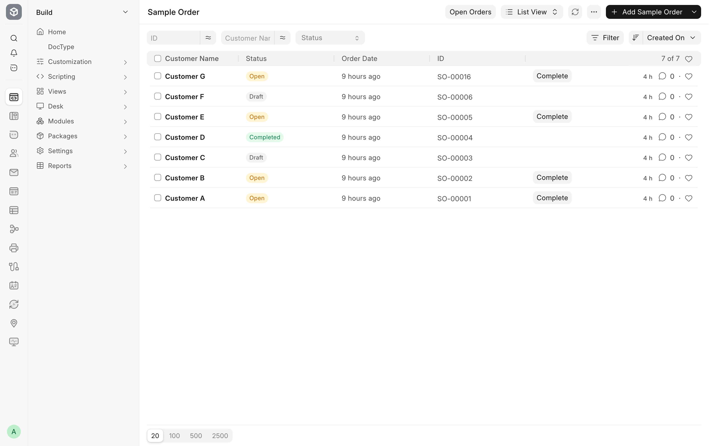

List View Settings¶
Each desk view of a DocType reads a settings object from a global registry. An app fills the registry in a JavaScript file next to the DocType, for example sample_order_list.js for the list view. Use these files to add indicators, row buttons, column formatters, default filters and view-specific options. To change columns or the page size without code, users have List Settings in the desk. See List View.
Files and registries¶
frappe/desk/form/meta.py reads these files from the DocType folder and from hooks. The browser runs them when it loads the DocType meta, in this order: list, calendar, tree, kanban, then Client Script records with view = List. A Client Script can therefore override the file-based settings.
| File in the DocType folder | Hook for other apps | Registry it fills |
|---|---|---|
<doctype>_list.js |
doctype_list_js |
frappe.listview_settings["<DocType>"] (list, report, kanban and image views) |
<doctype>_calendar.js |
doctype_calendar_js |
frappe.views.calendar["<DocType>"] (calendar and gantt views) |
<doctype>_tree.js |
doctype_tree_js |
frappe.treeview_settings["<DocType>"] (tree view) |
<doctype>_kanban.js |
doctype_kanban_js |
frappe.kanban_v2.settings["<DocType>"] (Kanban boards that use Kanban v2) |
The <doctype> part is the scrubbed DocType name, for example sample_order. A file regional/<country>_list.js is also added to the list code when System Settings has that country. A custom DocType (custom = 1) loads no files. Use a Client Script with view = List for it.
# sample_app/hooks.py
doctype_list_js = {"ToDo": "public/js/todo_list.js"}
doctype_calendar_js = {"ToDo": "public/js/todo_calendar.js"}
A hook file runs after the file of the owning app. Assigning a new object replaces the settings of the owning app. Change single keys instead:
// sample_app/public/js/todo_list.js
frappe.listview_settings["ToDo"] = frappe.listview_settings["ToDo"] || {};
frappe.listview_settings["ToDo"].add_fields = ["priority"];
List view settings¶
// sample_app/sample_module/doctype/sample_order/sample_order_list.js
frappe.listview_settings["Sample Order"] = {
add_fields: ["status", "total"],
has_indicator_for_draft: 1,
get_indicator(doc) {
const colors = { Draft: "gray", Open: "orange", Completed: "green", Cancelled: "red" };
return [__(doc.status), colors[doc.status] || "gray", "status,=," + doc.status];
},
button: {
show: (doc) => doc.status === "Open",
get_label: () => __("Complete"),
get_description: (doc) => __("Mark {0} as Completed", [doc.name]),
action: (doc) =>
frappe.db.set_value("Sample Order", doc.name, "status", "Completed")
.then(() => cur_list.refresh()),
},
formatters: {
order_date: (value) => `<span class="text-muted">${frappe.datetime.prettyDate(value)}</span>`,
},
onload(listview) {
listview.page.add_inner_button(__("Open Orders"), () =>
listview.filter_area.add([["Sample Order", "status", "=", "Open"]])
);
},
};

The list in the image has no Workflow. If the DocType has an active Workflow, a row with a workflow state shows that state instead of the result of get_indicator. This does not happen when every active Workflow of the DocType has Don't Override Status (override_status) set.
| Key | Type | Description |
|---|---|---|
add_fields |
list | Extra fields to fetch for each row. Add every field that get_indicator, button or formatters reads. |
filters |
list | Default filters, as [fieldname, operator, value]. Used only when the user has no saved filters. |
hide_name_column |
bool | Hide the name (ID) column. |
hide_name_filter |
bool | Hide the ID filter in the standard filter bar. |
get_indicator(doc) |
function | Return [label, color, filter] for the status indicator. filter is "field,operator,value" and is applied when the user clicks the indicator. |
has_indicator_for_draft |
bool | For a submittable DocType, use get_indicator for drafts instead of the "Draft" indicator. |
has_indicator_for_cancelled |
bool | The same for cancelled documents. |
formatters |
object | {fieldname: (value, df, doc) => html}. Formats a column. |
button |
object | One button per row: show(doc), get_label(doc), get_description(doc), action(doc). |
dropdown_button |
object | A dropdown per row: get_label (a string) and buttons, a list of {get_label, show(doc), get_description(doc), action(doc)}. |
onload(listview) |
function | Runs once after the view is set up. Add page buttons and menu items here. |
before_render() |
function | Runs before each render of the rows. |
refresh(listview) |
function | Runs after each data refresh. |
primary_action() |
function | Replaces the action of the "Add" button. |
get_form_link(doc) |
function | Return the URL a row opens. |
listview is the frappe.views.ListView instance. Useful members: listview.page (a frappe.ui.Page), listview.filter_area, listview.data, listview.get_checked_items(), listview.refresh(). To add an item to the Actions menu of selected rows, call listview.page.add_actions_menu_item(label, fn).
The indicator rules in frappe/public/js/frappe/model/indicator.js run in this order: unsaved, workflow state, draft and cancelled (for submittable DocTypes), DocType states that match doc.status, get_indicator, submitted, status, enabled, disabled.
Calendar and gantt settings¶
// sample_app/sample_module/doctype/sample_event/sample_event_calendar.js
frappe.views.calendar["Sample Event"] = {
field_map: {
start: "starts_on",
end: "ends_on",
id: "name",
title: "subject",
allDay: "all_day",
},
gantt: true,
get_events_method: "frappe.desk.calendar.get_events",
};
| Key | Description |
|---|---|
field_map |
Maps start, end, id, title, allDay and convertToUserTz to fieldnames. The gantt view also reads progress, color, is_milestone and depends_on. |
get_events_method |
Dotted path of a whitelisted method. Default frappe.desk.calendar.get_events, which takes doctype, start, end, field_map, filters, fields, order_by. |
get_css_class(event) |
Return danger, success, warning or default to color an event. |
fields |
Extra fields to fetch for each event. |
options |
Extra FullCalendar options. |
gantt |
true, or an object of keys that override this object in the gantt view. |
order_by |
Sort order of the gantt view. |
apply_to_custom_calendar_views |
Also apply fields and get_css_class to Calendar View records. |
Tree view settings¶
A tree view needs a DocType with is_tree = 1. See DocTypes. Common keys of frappe.treeview_settings["<DocType>"]:
| Key | Description |
|---|---|
get_tree_nodes |
Method that returns child nodes. Default frappe.desk.treeview.get_children. |
add_tree_node |
Method that adds a node. Default frappe.desk.treeview.add_node. |
root_label |
Label of the root node. |
get_tree_root |
Set false to skip the root node lookup. |
title |
Page title. |
filters |
Filter fields shown above the tree. |
fields, ignore_fields |
Fields of the "Add Child" dialog. |
onload(treeview), post_render(treeview) |
Run after load and after render. |
onrender(node), on_node_render(node, deep), click(node) |
Node hooks. |
get_label(node) |
Return the label of a node. |
toolbar, extend_toolbar |
Node buttons. With extend_toolbar: true your buttons are added to the standard ones. |
menu_items |
Extra page menu items. |
disable_add_node |
Hide "Add Child". |
Kanban settings¶
<doctype>_kanban.js fills frappe.kanban_v2.settings["<DocType>"]. It applies to Kanban boards that have use_kanban_v2 set. Keys include card_context_menu(card, page), bulk_actions(ids, page), callbacks (canMoveCard, onBeforeCardMove, onCardMove, onAfterCardMove, onCardClick), select_styles, options and boards (overrides for one board by name). An app that extends another app calls frappe.kanban_v2.extend_settings(doctype, patch) so the base settings stay.
Pitfalls¶
- A field that
get_indicatororbutton.showreads isundefinedunless it is a list column or inadd_fields. - For submittable DocTypes,
get_indicatoris ignored for drafts and cancelled documents unless you sethas_indicator_for_draftorhas_indicator_for_cancelled. - A formatter on the first (subject) column is shown as plain text. HTML tags appear as text. Use formatters on other columns for HTML.
- The
filterskey offrappe.views.calendaris not read by the calendar view in this version. - The settings code comes with the DocType meta, which the browser caches. After you change a settings file, reload the page. Outside developer mode, also run
bench --site <site> clear-cache.